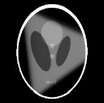

CTはX線を用いて人体の断面像を表示する装置であり、近年の医療では必要不可欠な技術です。このCTに対して、診断効率向上や立体表示のため３次元CTへの要求が高まってきています。そこで当研究室では３次元画像を高速に撮影するCTの構成方式を提案し、現在は実用化するまでに至っています。 さらに近年では動きを映像化しないと診断できない心臓病などの病気に対してもCTを用いて診断したいという要求も出てきました。この要求に応える技術を４次元CTと呼んでいます。この４次元CTでは、データ取得中の物体の動きや画像生成での計算量が問題となっています。 そのため現在当研究室では４次元CTを実用化させるために、新しい装置の構成方式やデータ収集法の研究、高精度画像再構成法の開発などを行っています。
CT(Computer Tomography) とは、X 線などのビームを物体に照射し、それらが物体の内部を透過して検出された投影データから物体の断面画像を計算機によって画像化する技術です。X 線CT の実用機が1973 年に発明されて以来現在までに様々な方式の装置が開発されており、結果として得られる画像も2 次元、3 次元、4 次元と高次元になってきています。しかし、高次元になるにつれてより多くの投影データが必要となるので、スキャンの回数や測定に要する時間が増えてしまいます。その結果、X線被爆量が増大してしまっているのが現状と言えます。 CT検査が行われる際には、心臓など、体の一部分のみを診断したい場合が多いと考えられます。この部分のことをROI （Region Of Interest: 関心領域）と言います。従来の画像再構成法では、このようにROIのみの再構成を目的としていても、断面像全体を再構成する場合と同じだけの投影データ、即ち、ROIを通らないデータも必要でした。しかしROIを通らない投影データはROIについての情報を持っていません。そこで、そのようなデータの測定を減らした画像再構成法の研究が行われています。高次元化しているCTにおいて不要な投影データを減らすことは、X線照射量の大幅な軽減につながり今後重要となってくると考えられます。 CT技術について詳しくはこちらで述べています。
4次元CTとは心臓など動く臓器の3次元構造を画像化し、その時間変化を観るものです。従来技術は、断面画像(2次元)の時間変化か、または静止した3次元画像の撮影しかできませんでした。しかし、3次元構造の物体に「時間」という新たな軸を加えることで物体の時間変化を観察できるようになります。そして、4次元CTにより新たな診断情報が追加されることが予想されるのでより細やかな画像診断が可能になり、心筋梗塞などの心臓疾患や脳梗塞、脳出血などの血流の異常を把握するなど、画像診断の幅も飛躍的に広がることが期待できます。しかし、4次元CTには以下にあげる問題があります。本研究室ではこれらの問題を解決し4次元CTを実現するための研究を行っています。
部分画像再構成法には大まかに、スーパー・ショート・スキャンを用いた画像再構成法と部分領域X線照射法の二つがあります。
|  | ||
| fig1 | fig2 | fig3 |
Copyright © 2005 Image Science Lab. All rights Reserved.